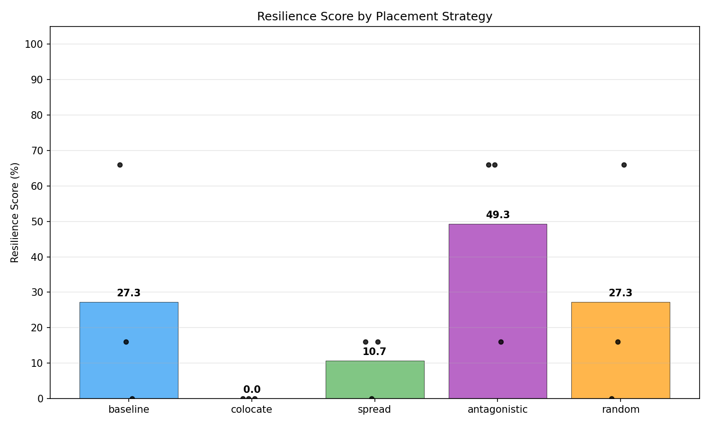
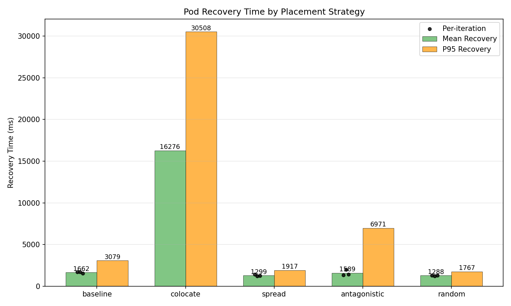
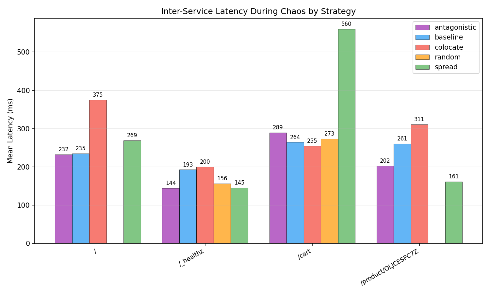
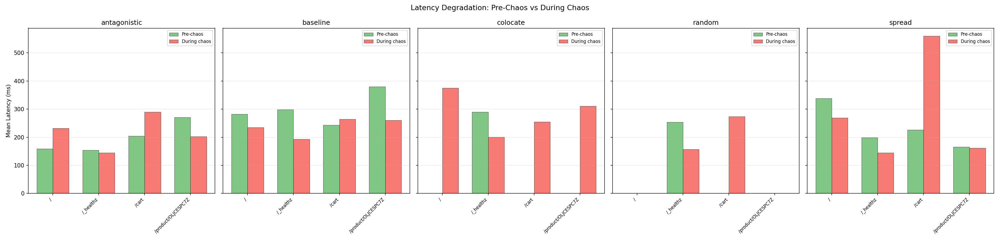
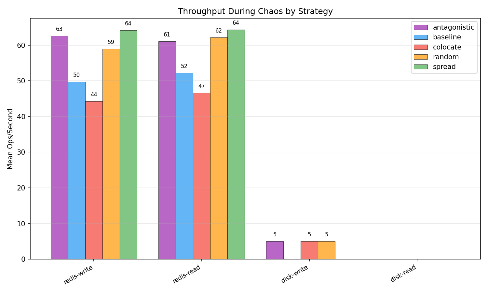
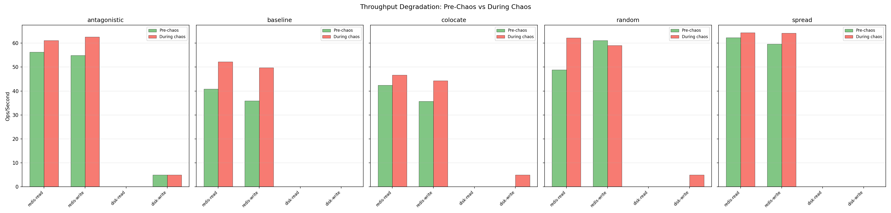
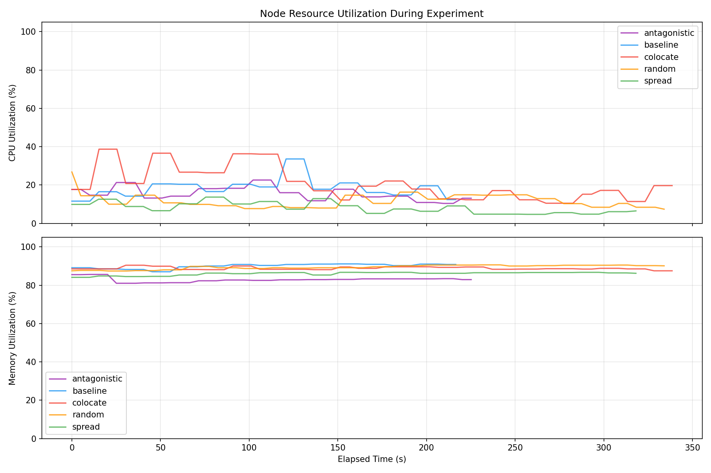
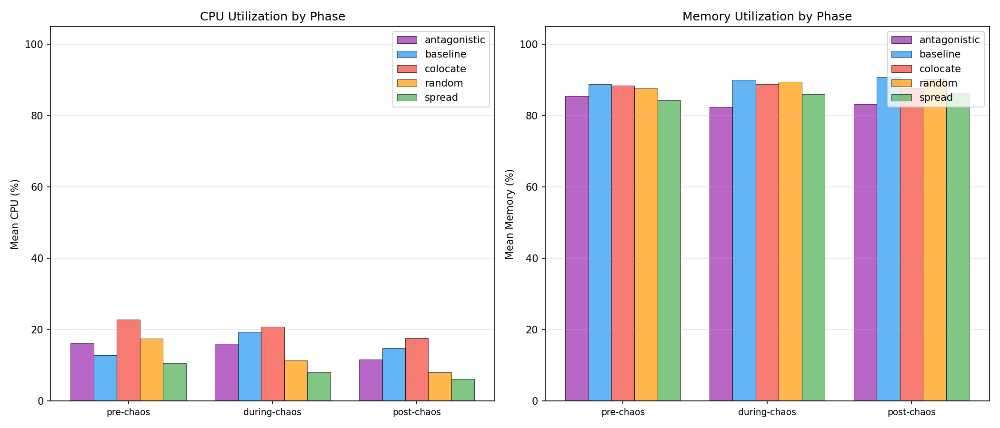
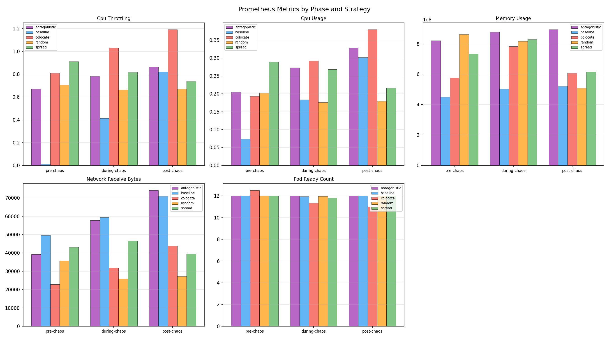

| Strategy | Runs | Avg Resilience Score | Pass Rate | Mean Recovery (ms) | Median Recovery (ms) | P95 Recovery (ms) |
|---|---|---|---|---|---|---|
| antagonistic | 3 | 49.3 | 0% | 1589.3 | 1421.4 | 6971.0 |
| baseline | 3 | 27.3 | 0% | 1661.7 | 1720.0 | 3079.0 |
| colocate | 3 | 0.0 | 0% | 16276.0 | 16276.0 | 30508.0 |
| random | 3 | 27.3 | 0% | 1287.5 | 1318.5 | 1767.0 |
| spread | 3 | 10.7 | 0% | 1298.9 | 1257.2 | 1917.0 |
| Strategy | Route | Pre-Chaos Mean (ms) | During Chaos Mean (ms) | During Chaos P95 (ms) | Post-Chaos Mean (ms) | Errors During Chaos |
|---|---|---|---|---|---|---|
| antagonistic | / | 158.5 | 232.0 | 388.6 | 211.5 | 6 |
| antagonistic | /_healthz | 153.7 | 144.3 | 309.4 | 170.5 | 0 |
| antagonistic | /cart | 204.5 | 289.4 | 393.0 | 186.4 | 0 |
| antagonistic | /product/OLJCESPC7Z | 271.0 | 202.3 | 330.8 | 186.9 | 6 |
| baseline | / | 281.9 | 235.1 | 383.8 | 209.1 | 6 |
| baseline | /_healthz | 297.9 | 192.7 | 396.6 | 99.7 | 0 |
| baseline | /cart | 243.2 | 264.4 | 479.2 | 230.9 | 0 |
| baseline | /product/OLJCESPC7Z | 379.9 | 260.6 | 491.6 | 265.1 | 5 |
| colocate | / | n/a | 375.0 | 589.9 | n/a | 54 |
| colocate | /_healthz | 289.3 | 200.2 | 322.3 | 328.5 | 0 |
| colocate | /cart | n/a | 254.8 | 490.4 | 229.8 | 7 |
| colocate | /product/OLJCESPC7Z | n/a | 310.8 | 598.0 | n/a | 53 |
| random | / | n/a | n/a | n/a | n/a | 34 |
| random | /_healthz | 253.7 | 156.4 | 403.9 | 194.7 | 0 |
| random | /cart | n/a | 273.3 | 273.3 | n/a | 33 |
| random | /product/OLJCESPC7Z | n/a | n/a | n/a | n/a | 34 |
| spread | / | 338.5 | 269.1 | 412.8 | n/a | 28 |
| spread | /_healthz | 199.1 | 145.0 | 383.2 | 151.1 | 0 |
| spread | /cart | 226.3 | 560.2 +148% | 3358.1 | n/a | 23 |
| spread | /product/OLJCESPC7Z | 165.7 | 161.2 | 359.8 | n/a | 27 |
| Strategy | Operation | Pre-Chaos Ops/s | During Chaos Ops/s | During Chaos Latency (ms) | During Chaos Bandwidth | Post-Chaos Ops/s |
|---|---|---|---|---|---|---|
| antagonistic | redis-read | 56.2 | 61.0 | 16.51 | n/a | 48.1 |
| antagonistic | redis-write | 54.9 | 62.6 | 16.07 | n/a | 62.1 |
| antagonistic | disk-read | n/a | n/a | n/a | n/a | n/a |
| antagonistic | disk-write | 5.0 | 5.0 | 200.00 | 2.5 MB/s | n/a |
| baseline | redis-read | 40.8 | 52.2 | 19.34 | n/a | 57.1 |
| baseline | redis-write | 35.9 | 49.8 | 20.34 | n/a | 61.7 |
| baseline | disk-read | n/a | n/a | n/a | n/a | n/a |
| baseline | disk-write | n/a | n/a | n/a | n/a | n/a |
| colocate | redis-read | 42.5 | 46.6 | 22.27 | n/a | 38.9 |
| colocate | redis-write | 35.7 | 44.3 | 23.57 | n/a | 37.6 |
| colocate | disk-read | n/a | n/a | n/a | n/a | n/a |
| colocate | disk-write | n/a | 5.0 | 200.00 | 2.5 MB/s | n/a |
| random | redis-read | 48.8 | 62.2 | 16.24 | n/a | 66.5 |
| random | redis-write | 61.1 | 59.0 | 17.37 | n/a | 67.2 |
| random | disk-read | n/a | n/a | n/a | n/a | n/a |
| random | disk-write | n/a | 5.0 | 200.00 | 2.5 MB/s | 5.0 |
| spread | redis-read | 62.2 | 64.3 | 15.67 | n/a | 72.6 |
| spread | redis-write | 59.7 | 64.2 | 15.72 | n/a | 64.4 |
| spread | disk-read | n/a | n/a | n/a | n/a | n/a |
| spread | disk-write | n/a | n/a | n/a | n/a | n/a |
| Strategy | Phase | Mean CPU (%) | Mean Memory (%) | Samples |
|---|---|---|---|---|
| antagonistic | pre-chaos | 16.2 | 85.5 | 4 |
| antagonistic | during-chaos | 16.1 | 82.5 | 36 |
| antagonistic | post-chaos | 11.6 | 83.2 | 5 |
| baseline | pre-chaos | 12.8 | 88.9 | 4 |
| baseline | during-chaos | 19.4 | 90.0 | 37 |
| baseline | post-chaos | 14.8 | 90.9 | 3 |
| colocate | pre-chaos | 22.9 | 88.5 | 4 |
| colocate | during-chaos | 20.9 | 88.9 | 60 |
| colocate | post-chaos | 17.6 | 87.8 | 4 |
| random | pre-chaos | 17.5 | 87.7 | 4 |
| random | during-chaos | 11.4 | 89.5 | 59 |
| random | post-chaos | 8.1 | 90.2 | 3 |
| spread | pre-chaos | 10.6 | 84.3 | 4 |
| spread | during-chaos | 8.1 | 86.1 | 56 |
| spread | post-chaos | 6.2 | 86.4 | 4 |
| Strategy | Metric | Phase | Mean | Max | Samples |
|---|---|---|---|---|---|
| antagonistic | cpu_throttling | pre-chaos | 0.6725 | 0.6769 | 2 |
| antagonistic | cpu_throttling | during-chaos | 0.7821 | 0.8956 | 18 |
| antagonistic | cpu_throttling | post-chaos | 0.8636 | 0.8744 | 3 |
| antagonistic | cpu_usage | pre-chaos | 0.2045 | 0.2048 | 2 |
| antagonistic | cpu_usage | during-chaos | 0.2727 | 0.3379 | 18 |
| antagonistic | cpu_usage | post-chaos | 0.3283 | 0.3311 | 3 |
| antagonistic | memory_usage | pre-chaos | 821944320.0000 | 821944320.0000 | 2 |
| antagonistic | memory_usage | during-chaos | 877852899.5556 | 913297408.0000 | 18 |
| antagonistic | memory_usage | post-chaos | 894268757.3333 | 911065088.0000 | 3 |
| antagonistic | network_receive_bytes | pre-chaos | 39249.2037 | 39282.0155 | 2 |
| antagonistic | network_receive_bytes | during-chaos | 57761.2753 | 75722.5601 | 18 |
| antagonistic | network_receive_bytes | post-chaos | 74086.7424 | 75723.6184 | 3 |
| antagonistic | pod_ready_count | pre-chaos | 12.0000 | 12.0000 | 2 |
| antagonistic | pod_ready_count | during-chaos | 12.0000 | 12.0000 | 18 |
| antagonistic | pod_ready_count | post-chaos | 12.0000 | 12.0000 | 3 |
| baseline | cpu_throttling | pre-chaos | 0.0116 | 0.0119 | 2 |
| baseline | cpu_throttling | during-chaos | 0.4132 | 0.7308 | 18 |
| baseline | cpu_throttling | post-chaos | 0.8223 | 0.8538 | 2 |
| baseline | cpu_usage | pre-chaos | 0.0735 | 0.0746 | 2 |
| baseline | cpu_usage | during-chaos | 0.1838 | 0.2770 | 18 |
| baseline | cpu_usage | post-chaos | 0.3015 | 0.3084 | 2 |
| baseline | memory_usage | pre-chaos | 448901120.0000 | 448901120.0000 | 2 |
| baseline | memory_usage | during-chaos | 503624135.1111 | 540925952.0000 | 18 |
| baseline | memory_usage | post-chaos | 521619456.0000 | 542965760.0000 | 2 |
| baseline | network_receive_bytes | pre-chaos | 49648.6430 | 50792.3818 | 2 |
| baseline | network_receive_bytes | during-chaos | 59341.8896 | 67948.6761 | 18 |
| baseline | network_receive_bytes | post-chaos | 71070.2708 | 71573.9546 | 2 |
| baseline | pod_ready_count | pre-chaos | 12.0000 | 12.0000 | 2 |
| baseline | pod_ready_count | during-chaos | 11.9444 | 12.0000 | 18 |
| baseline | pod_ready_count | post-chaos | 12.0000 | 12.0000 | 2 |
| colocate | cpu_throttling | pre-chaos | 0.8109 | 0.8138 | 2 |
| colocate | cpu_throttling | during-chaos | 1.0316 | 1.2176 | 30 |
| colocate | cpu_throttling | post-chaos | 1.1912 | 1.1944 | 2 |
| colocate | cpu_usage | pre-chaos | 0.1931 | 0.1940 | 2 |
| colocate | cpu_usage | during-chaos | 0.2919 | 0.3827 | 30 |
| colocate | cpu_usage | post-chaos | 0.3793 | 0.3840 | 2 |
| colocate | memory_usage | pre-chaos | 576548864.0000 | 576548864.0000 | 2 |
| colocate | memory_usage | during-chaos | 783731507.2000 | 858279936.0000 | 30 |
| colocate | memory_usage | post-chaos | 608212992.0000 | 608350208.0000 | 2 |
| colocate | network_receive_bytes | pre-chaos | 22809.6144 | 23421.4902 | 2 |
| colocate | network_receive_bytes | during-chaos | 31980.8153 | 44661.4067 | 30 |
| colocate | network_receive_bytes | post-chaos | 43851.1307 | 44524.0991 | 2 |
| colocate | pod_ready_count | pre-chaos | 12.5000 | 13.0000 | 2 |
| colocate | pod_ready_count | during-chaos | 11.3333 | 12.0000 | 30 |
| colocate | pod_ready_count | post-chaos | 11.0000 | 11.0000 | 2 |
| random | cpu_throttling | pre-chaos | 0.7080 | 0.7164 | 2 |
| random | cpu_throttling | during-chaos | 0.6644 | 0.7099 | 30 |
| random | cpu_throttling | post-chaos | 0.6702 | 0.6702 | 1 |
| random | cpu_usage | pre-chaos | 0.2018 | 0.2055 | 2 |
| random | cpu_usage | during-chaos | 0.1760 | 0.1898 | 30 |
| random | cpu_usage | post-chaos | 0.1793 | 0.1793 | 1 |
| random | memory_usage | pre-chaos | 861362176.0000 | 882483200.0000 | 2 |
| random | memory_usage | during-chaos | 817395165.8667 | 933912576.0000 | 30 |
| random | memory_usage | post-chaos | 508280832.0000 | 508280832.0000 | 1 |
| random | network_receive_bytes | pre-chaos | 35775.5465 | 37229.8306 | 2 |
| random | network_receive_bytes | during-chaos | 25961.8435 | 30831.9294 | 30 |
| random | network_receive_bytes | post-chaos | 27252.6653 | 27252.6653 | 1 |
| random | pod_ready_count | pre-chaos | 12.0000 | 12.0000 | 2 |
| random | pod_ready_count | during-chaos | 11.9667 | 12.0000 | 30 |
| random | pod_ready_count | post-chaos | 12.0000 | 12.0000 | 1 |
| spread | cpu_throttling | pre-chaos | 0.9105 | 0.9258 | 2 |
| spread | cpu_throttling | during-chaos | 0.8187 | 0.9005 | 28 |
| spread | cpu_throttling | post-chaos | 0.7381 | 0.7459 | 2 |
| spread | cpu_usage | pre-chaos | 0.2891 | 0.2905 | 2 |
| spread | cpu_usage | during-chaos | 0.2683 | 0.3025 | 28 |
| spread | cpu_usage | post-chaos | 0.2162 | 0.2234 | 2 |
| spread | memory_usage | pre-chaos | 736219136.0000 | 785346560.0000 | 2 |
| spread | memory_usage | during-chaos | 831125650.2857 | 921849856.0000 | 28 |
| spread | memory_usage | post-chaos | 615424000.0000 | 615698432.0000 | 2 |
| spread | network_receive_bytes | pre-chaos | 43172.2682 | 43219.6803 | 2 |
| spread | network_receive_bytes | during-chaos | 46712.7479 | 53860.5624 | 28 |
| spread | network_receive_bytes | post-chaos | 39586.6013 | 40949.9923 | 2 |
| spread | pod_ready_count | pre-chaos | 12.0000 | 12.0000 | 2 |
| spread | pod_ready_count | during-chaos | 11.8214 | 12.0000 | 28 |
| spread | pod_ready_count | post-chaos | 12.0000 | 12.0000 | 2 |








